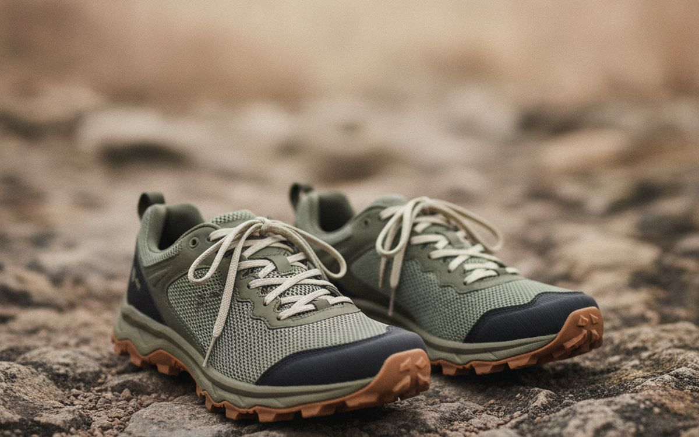
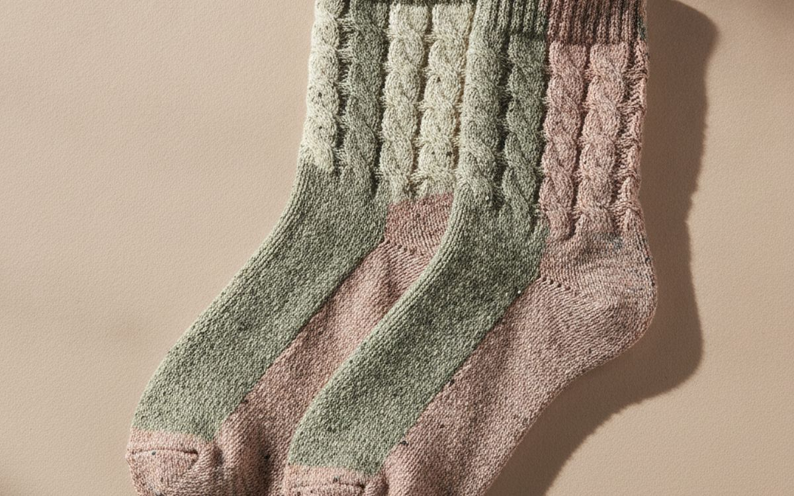
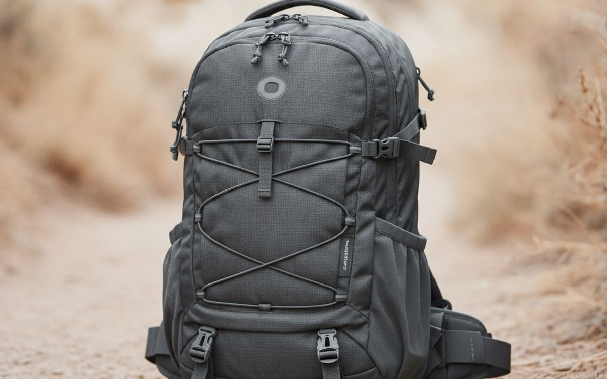
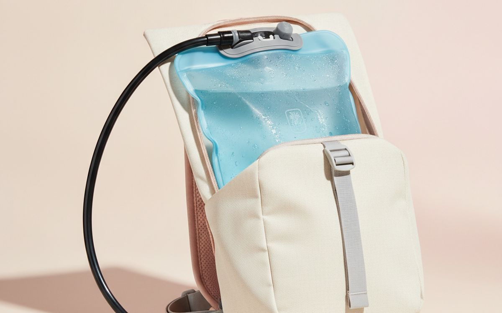
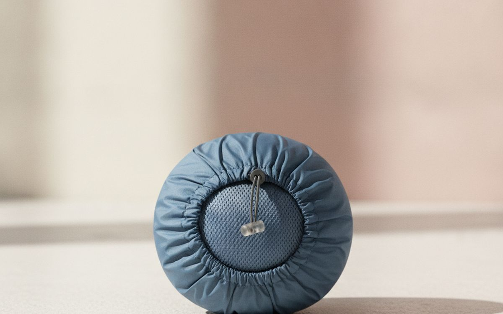
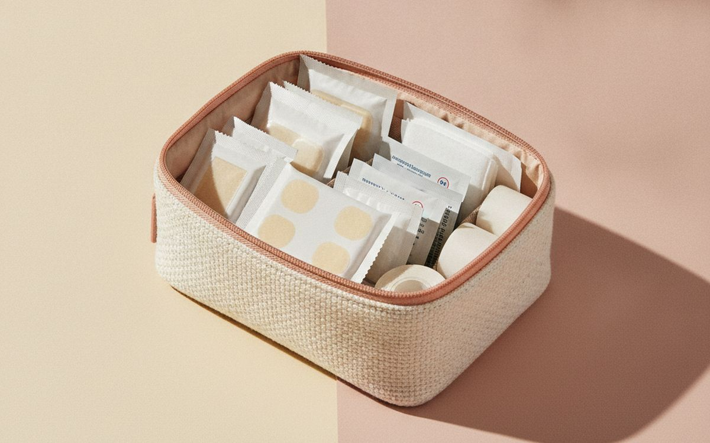
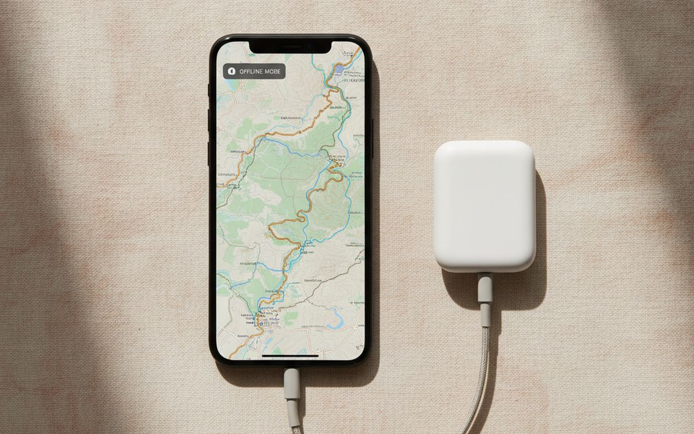
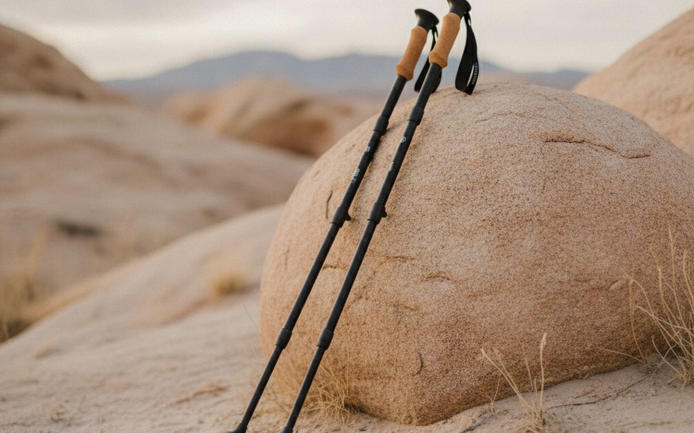
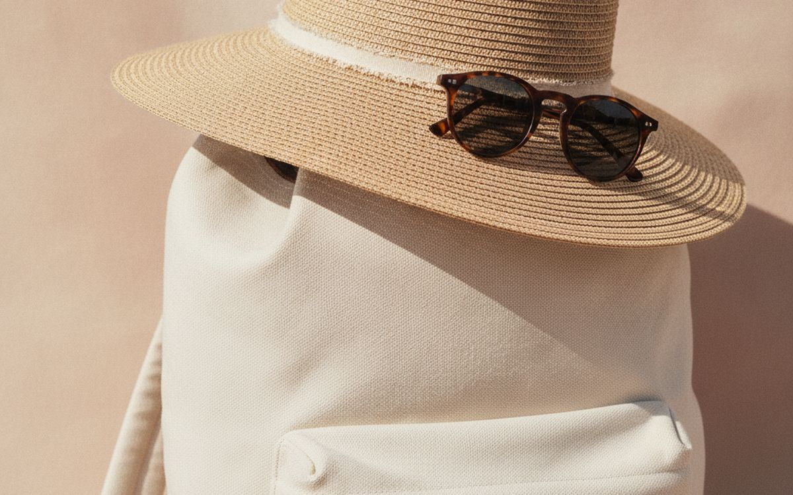
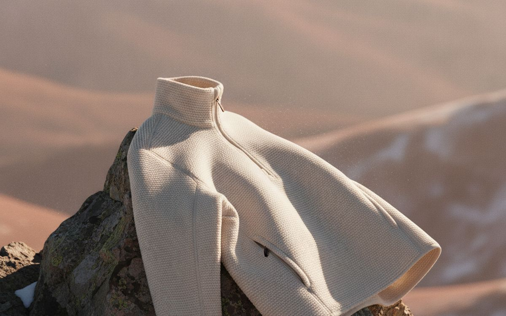

Most day hikes go fine. The ones that do not tend to go wrong in small, predictable ways: blisters from new shoes, running out of water on a hot afternoon, a phone dying just as you need the map, or a sudden cold wind at the summit in a cotton T-shirt. None of it is dramatic. It is just the difference between a good day and a miserable walk back.
This list is ordered by how much each item protects that day. Feet come first because that is where most hikes are won or lost. The rest is light, affordable kit you will use for years.
Prices below are approximate street prices at the time of writing and move around constantly, especially during sale events. Treat them as a rough band for budgeting, not a quote. Always check the live listing before you buy.
Με λίγα λόγια
Trail shoes or light hiking shoes that fit
The kit that decides the day
Γνωστοποίηση. Οι σύνδεσμοι σε αυτή τη σελίδα είναι συνδεδεμένοι. Αν αγοράσετε μέσω κάποιου, ενδέχεται να λάβουμε προμήθεια χωρίς επιπλέον κόστος για εσάς. Δεν επηρεάζει το τι μπαίνει στη λίστα ούτε τη σειρά της.
Πώς επιλέξαμε
These picks come from outdoor retailers' fitting advice, park service safety guidance, hiking communities and long-run owner reports, cross-checked against current retail listings. We have not personally tested every item here. For multi-day trips and camping, see our separate camping guide.
Με μια ματιά
Οι τιμές είναι ενδεικτικές κατά τη συγγραφή και αλλάζουν συχνά.
Οι επιλογές

01 · The kit that decides the dayTrail shoes or light hiking shoes that fit
For most day hikes on maintained trails, light trail shoes are more comfortable than heavy boots and dry faster. Fit is everything: buy in the afternoon when feet are slightly swollen, with a thumb's width at the toe for descents, and walk them in before a long hike. Waterproof versions keep feet dry in wet grass but get hot in summer. Heavy boots only earn their weight on rough terrain with a heavy pack or for weak ankles. The case for it: lighter and more comfortable than boots, grippy soles for trails, and dry faster when wet. The trade-off is real: less ankle support than boots and wear out faster than boots, so weigh that against how often it would actually get used.
$90-160Ο συμβιβασμός: Less ankle support than boots
Γιατί είναι εδώ
- Lighter and more comfortable than boots
- Grippy soles for trails
- Dry faster when wet
Αξίζει να ξέρετε
- Less ankle support than boots
- Wear out faster than boots

02 · Preventing blistersMerino or synthetic hiking socks
Cotton socks hold sweat, and damp skin rubs into blisters. Merino wool or synthetic hiking socks move moisture away from the skin, cushion the right spots and do not smell as much. They cost more than regular socks and are worth every cent. Carry a spare pair on long hikes. The case for it: prevents blisters, less smell, and comfortable for hours. The trade-off is real: merino wears through faster than synthetic and expensive compared with regular socks, so weigh that against how often it would actually get used. For $15-25 per pair, it is a small, low-risk addition to the list rather than a centrepiece purchase you need to think hard about.
$15-25 per pairΟ συμβιβασμός: Merino wears through faster than synthetic
Γιατί είναι εδώ
- Prevents blisters
- Less smell
- Comfortable for hours
Αξίζει να ξέρετε
- Merino wears through faster than synthetic
- Expensive compared with regular socks

03 · Carrying it all comfortablyA 20-30L daypack with a hip belt
A school backpack hangs from the shoulders and bounces. A proper daypack sits closer to the back, has a ventilated panel and a hip belt that moves weight to your hips. 20-30 litres fits water, layers, food and a first aid kit. Look for a sleeve for a water bladder and side pockets you can reach while walking. The case for it: comfortable for long walks, ventilated back panel, and room for layers and water. The trade-off is real: cheap packs have weak zips and try it loaded before a long hike, so weigh that against how often it would actually get used.
$50-120Ο συμβιβασμός: Cheap packs have weak zips
Γιατί είναι εδώ
- Comfortable for long walks
- Ventilated back panel
- Room for layers and water
Αξίζει να ξέρετε
- Cheap packs have weak zips
- Try it loaded before a long hike

04 · Enough waterA 2L water bladder or two bottles
Dehydration creeps up quietly and makes everything harder. Carry at least half a litre per hour of hiking, more in heat. A bladder with a tube lets you sip while walking, so you actually drink. Bottles are easier to refill and check. For longer hikes with streams, add a small water filter. The case for it: drink while walking, prevents dehydration, and holds plenty of water. The trade-off is real: bladders are harder to clean and cheap bladders can leak or taste of plastic, so weigh that against how often it would actually get used.
$15-35Ο συμβιβασμός: Bladders are harder to clean
Γιατί είναι εδώ
- Drink while walking
- Prevents dehydration
- Holds plenty of water
Αξίζει να ξέρετε
- Bladders are harder to clean
- Cheap bladders can leak or taste of plastic

05 · Wind and rain at the topA light waterproof shell
Weather at the summit is often very different from the car park. A packable waterproof jacket blocks wind and rain and weighs little. Look for taped seams and a hood that adjusts. It lives in the pack on sunny days too. The case for it: blocks wind and rain, packs small, and used year round. The trade-off is real: cheap shells get clammy inside and needs re-proofing after a few seasons, so weigh that against how often it would actually get used. For $60-150, it is a small, low-risk addition to the list rather than a centrepiece purchase you need to think hard about.
$60-150Ο συμβιβασμός: Cheap shells get clammy inside
Γιατί είναι εδώ
- Blocks wind and rain
- Packs small
- Used year round
Αξίζει να ξέρετε
- Cheap shells get clammy inside
- Needs re-proofing after a few seasons

06 · Small injuriesA small first aid and blister kit
Blisters, scrapes and minor sprains are the common injuries on day hikes. A small kit with blister plasters, tape, antiseptic wipes, painkillers and an elastic bandage handles them. Add any personal medication. Treat a hot spot on your foot as soon as you feel it, before it becomes a blister. The case for it: handles common trail injuries, small and light, and blister care saves the day. The trade-off is real: pre-made kits often lack blister care and check and refill after use, so weigh that against how often it would actually get used.
$15-30Ο συμβιβασμός: Pre-made kits often lack blister care
Γιατί είναι εδώ
- Handles common trail injuries
- Small and light
- Blister care saves the day
Αξίζει να ξέρετε
- Pre-made kits often lack blister care
- Check and refill after use

07 · Not getting lostAn offline map app plus a power bank
Phone signal disappears in valleys and forests. Download the trail map before leaving with apps like AllTrails, Gaia GPS or your park's own app. GPS still works without signal. Carry a small power bank, because navigation drains batteries fast. Tell someone your route and when you expect to return. The case for it: works without signal, shows your exact location, and power bank keeps it running. The trade-off is real: phones die in cold weather and a paper map is still a good backup, so weigh that against how often it would actually get used.
$0-40Ο συμβιβασμός: Phones die in cold weather
Γιατί είναι εδώ
- Works without signal
- Shows your exact location
- Power bank keeps it running
Αξίζει να ξέρετε
- Phones die in cold weather
- A paper map is still a good backup

08 · Knees on descentsTrekking poles
Poles take strain off knees on steep descents and help balance on rough or wet ground. Folding or telescoping poles pack away when not needed. Cork or foam grips are more comfortable than plastic. They seem optional until your first long downhill. The case for it: less knee strain downhill, better balance, and fold small. The trade-off is real: another thing to carry and cheap locks slip, so weigh that against how often it would actually get used. For $30-80, it is a small, low-risk addition to the list rather than a centrepiece purchase you need to think hard about.
$30-80Ο συμβιβασμός: Another thing to carry
Γιατί είναι εδώ
- Less knee strain downhill
- Better balance
- Fold small
Αξίζει να ξέρετε
- Another thing to carry
- Cheap locks slip

09 · Exposed trailsA sun hat and sunglasses
Exposed ridges and desert trails mean hours of sun. A wide-brim hat protects the face, ears and neck, and UV-blocking sunglasses protect your eyes. Add sunscreen to the pack. Sunburn and heat exhaustion are two of the most common reasons hikes end badly in summer. The case for it: protects from sunburn and heat, protects eyes, and cheap. The trade-off is real: wide brims catch wind and cheap sunglasses may not block UV fully, so weigh that against how often it would actually get used. Priced around $20-50, it is easy to justify even if it only ends up getting occasional rather than daily use.
$20-50Ο συμβιβασμός: Wide brims catch wind
Γιατί είναι εδώ
- Protects from sunburn and heat
- Protects eyes
- Cheap
Αξίζει να ξέρετε
- Wide brims catch wind
- Cheap sunglasses may not block UV fully

10 · Cold summits and breaksA fleece or light insulated layer
You warm up walking uphill and cool down fast at the top or at lunch. A light fleece or synthetic insulated jacket keeps you warm on breaks. Synthetic insulation stays warm when damp, which down does not. It packs into the bottom of the daypack. The case for it: stay warm on breaks and summits, light, and useful for daily wear too. The trade-off is real: bulky fleeces take pack space and down loses warmth when wet, so weigh that against how often it would actually get used. At $30-80, it earns its place on this list without asking for a big up-front commitment either way.
$30-80Ο συμβιβασμός: Bulky fleeces take pack space
Γιατί είναι εδώ
- Stay warm on breaks and summits
- Light
- Useful for daily wear too
Αξίζει να ξέρετε
- Bulky fleeces take pack space
- Down loses warmth when wet
Συχνές ερωτήσεις
Do I need hiking boots for day hikes?
Not usually. Trail shoes are lighter and comfortable on most maintained trails. Boots help on rough terrain or if you need ankle support.
How much water should I bring?
About half a litre per hour of hiking, more in heat. Bring extra if you are unsure.
What are the ten essentials?
Navigation, light, sun protection, first aid, a knife or tool, fire, shelter, extra food, extra water and extra layers. Scale them to the hike.
How do I avoid blisters?
Shoes that fit, merino or synthetic socks, and treating hot spots early.
Οι προσφορές σήμερα
Δείτε τι είναι σε έκπτωση αυτή τη στιγμή.
Προσφορές →← Όλοι οι οδηγοί
Ως συνεργάτες της AliExpress, κερδίζουμε από επιλέξιμες αγορές. Οι τιμές και η διαθεσιμότητα ισχύουν κατά την ημερομηνία δημοσίευσης και ενδέχεται να αλλάξουν.